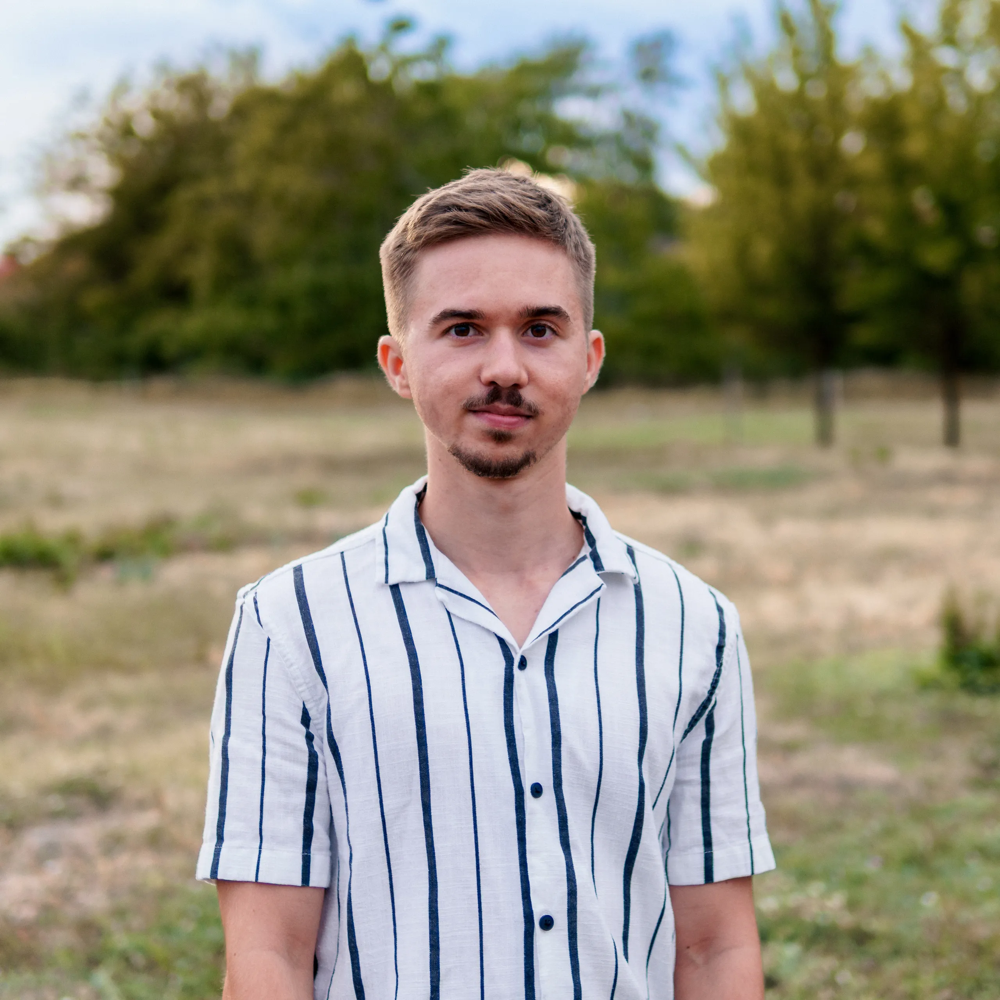

Gabriel Madový
Memories fade, photographs remain. My passion is capturing moments that last forever.

this.classList.add('is-loaded')).catch(() => this.classList.add('is-loaded')) : this.classList.add('is-loaded')" />Philosophy
Behind the lens, I don’t just take photos, I capture real stories. My work focuses on raw, natural moments and a relaxed atmosphere. I create visual memories that bring back the exact same feeling, even years down the road.
Services
Event Photography
Whether it's a festival main stage, a night party, or a family gathering, I always find the best angle. I'm comfortable in challenging low-light environments while delivering sharp, vibrant results for classic events.
Open to new projects
Flexible and always open to unique ideas and special shoots.
GALANTA / NOVÉ ZÁMKY / DUNAJSKÁ STREDA
Portrait Photography
Individual portraits, yearbook photos, and professional headshots. Using portable studio gear or working on location, I focus on an authentic and flattering look, whether with flash or in natural light.
Real Estate & Interior
Professional presentation of interiors, apartments, and commercial spaces. Clean compositions that sell the space.
Quality Guarantee
I create a relaxed and friendly atmosphere for a natural, authentic result - always delivered at the highest quality.
Frequently Asked Questions
I am primarily based around Galanta and nearby villages like Dolné Saliby, Horné Saliby, or Šaľa. I also regularly travel for shoots to Dunajská Streda, Nové Zámky, or Bratislava. If your event happens anywhere else across the country or at a specific destination, I am always open to arranging custom travel terms.
I feel most at home with high-energy events and concerts where genuine moments happen naturally. I also enjoy working with graduating classes on prom nights, class portraits, and yearbooks. If you need clean outdoor portraits, business headshots, or quality photos of an apartment or property for rent, I will gladly help with those as well.
All selected and retouched photos are delivered in full resolution via a private Google Drive link, where they stay available for at least 6 months after upload. Curation and editing for portraits usually take 3 to 7 business days, while full coverage of larger festivals, events, or proms is delivered within 7 to 14 business days.
Every request is different, but I keep pricing straightforward without any hidden costs. The rate depends mainly on the hours spent on location, the requested photo count, and travel distance, and the fee naturally covers both the shooting time and the full editing process. You can also use the interactive calculator directly on the site to get a clear estimate before reaching out.
You do not need to worry at all. I am very comfortable working in darker settings thanks to my experience at the Hajómalom Festival and various night concerts. Professional gear and fast prime lenses ensure crisp images even under tricky lighting. If we have an outdoor portrait session planned and the weather turns bad, we will not force it; we simply reschedule for another sunny day free of charge.
Portfolio


.webp)